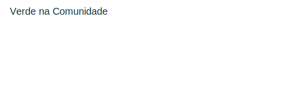

Educação para o Futuro
Oferecemos reforço escolar, oficinas de informática e apoio a preparação para o mercado de trabalho para jovens da comunidade.
Indicadores: 200 alunos atendidos / taxa de aprovação escolar +15%
Oferecemos reforço escolar, oficinas de informática e apoio a preparação para o mercado de trabalho para jovens da comunidade.
Indicadores: 200 alunos atendidos / taxa de aprovação escolar +15%
Campanhas de reflorestamento urbano, hortas comunitárias e educação ambiental para escolas locais.
Meta: 1.000 mudas plantadas em 2025
As doações são aplicadas diretamente nos projetos e você pode acompanhar relatórios de transparência sempre que houver movimentação relevante.